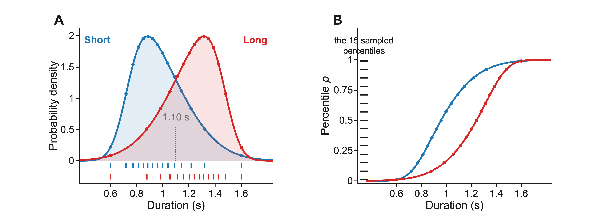
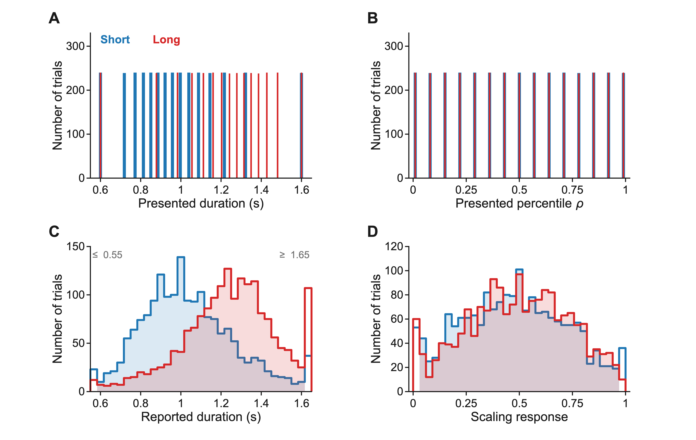
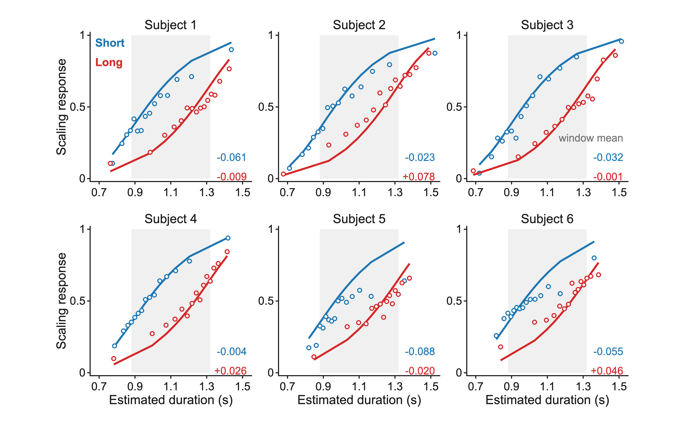
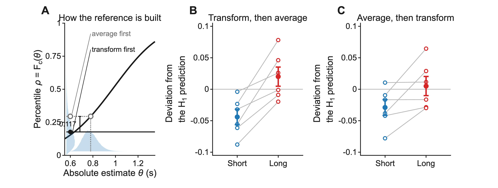
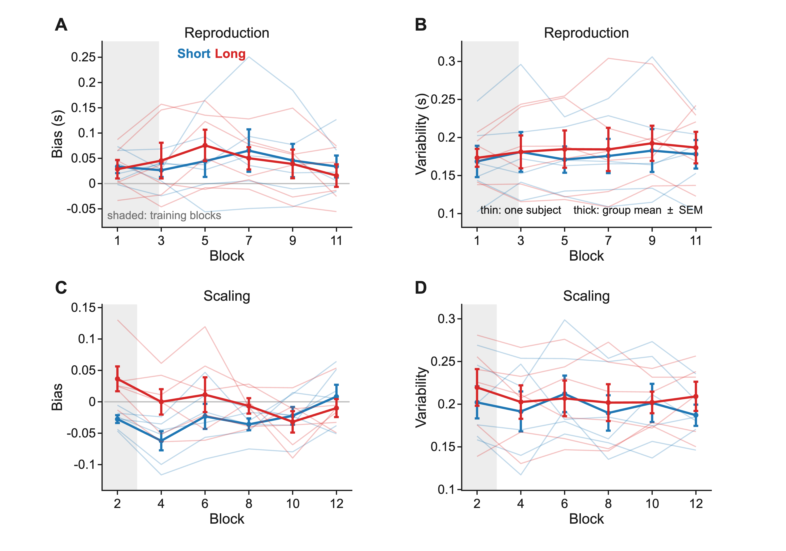
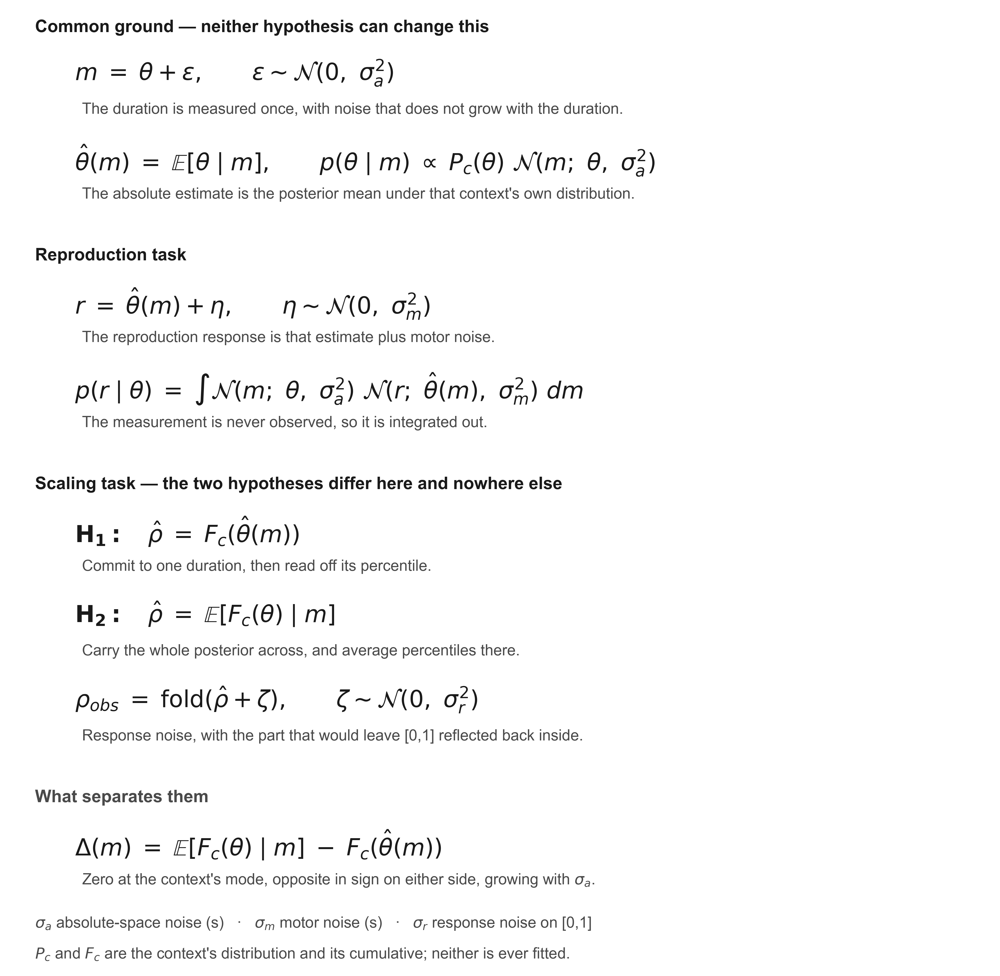

Accompanying the poster of the same name, CBrain 2026. This version 5 September 2026.
What we found. Observers indicate the percentile of a duration within its context. Their scaling responses deviate from what H1 predicts, and the deviation depends on the context. Over the centre window the Long context sits 0.064 above the Short in all six subjects (paired t(5) = 4.85, p = 0.005). H1 predicts no such difference; H2 predicts one of this sign. These data count against H1; they do not by themselves establish H2, which this design cannot fully separate from it.
Data collection is ongoing and the subject roster is not closed. Every value here is provisional on the six subjects released.
Everything used later is defined here, once.
Quantities. A duration θ has a percentile ρ = Fc(θ) within its context c, where Fc is that context's cumulative distribution function. The observer measures the duration once, as m = θ + noise of standard deviation σa, and forms an absolute estimate θ̂(m) = E[θ | m] under that context's own distribution. σm is noise on the reproduction response, in seconds; σr is noise on the scaling response, on [0,1].
The two hypotheses. Under H1 only the single estimate is transformed: ρ̂ = Fc(θ̂). Under H2 the whole posterior is transformed and averaged in relative space: ρ̂ = E[Fc(θ) | m]. Figure S6 writes every equation out.
Deviation. Throughout, a deviation is the scaling response minus what H1 predicts — not minus Fc(θ). At each duration H1 predicts a mean scaling response of Em[Fc(θ̂(m))], the average of the transformed estimate over the observer's own measurement noise. This is the transform-then-average reference, computed with 80-node Gauss–Hermite quadrature at the reproduction-only σa of Table S3. Figure S4A draws its construction; Figure S5 is the one place that uses a different reference, and says so.
Centre window. Durations whose model-predicted estimates fall in 0.88–1.32 s, the interval between the two contexts' modes (0.8845 s and 1.3155 s). The shift is the Long − Short difference in deviation, averaged over that window.
Conventions. The two contexts are named as they were to the subject, Short and Long, drawn in blue and red throughout. SD is the standard deviation, SEM the standard error of the mean. Blocks 1 and 2 are training blocks with feedback on every trial; they appear only in Figure S5, on a grey ground, and are excluded from every other analysis.
All replays run at one quarter of real time; each recorded frame is held four times and none is interpolated. Both task recordings open on the screen showing that context's distribution, because the context was instructed rather than learned — which is why the analysis treats Fc as known to the subject and never estimates it from the responses. Three details differ from the conventions used here: the recordings were made during practice blocks, so the screen says so and feedback appears every trial; the on-screen distribution uses the experiment's own colours; and the file for Movie S3 is named for an earlier name of the scaling task.

(A) Durations are sampled from 15 uniformly spaced percentiles in either a right-skewed (Short) or left-skewed (Long) context. Both distributions are skew-normal and untruncated: location 0.731 s, scale 0.337 s, shape +3.3 for Short, and the exact reflection about 1.10 s for Long. Circles mark the 15 sampled durations; the tick rows below repeat them, one per context. The shading is each density; the darker band is their overlap. (B) The same durations on the two veridical CDFs. The ruler at the left marks the 15 percentiles, 0.01 to 0.99 in steps of 0.07 — evenly spaced by construction, so the two contexts present identical percentiles while presenting different durations.
Recomputing the durations from the sampling rule reproduces those presented to within 0.9 ms. Truncating the distributions to the presented range would move Fc by up to 0.010, about a sixth of the shift, so nothing here truncates. Values in Table S1.

(A) The durations presented. (B) The same trials as percentiles: the contexts coincide exactly, so any difference in (D) was introduced by the subject. (C) Reproduction responses, in bins of 0.033 s; the two end bins accumulate everything beyond the range and are left unfilled and labelled. Responses run from 0.344 s to 2.322 s. Within each context the response is a compressed function of the duration presented: an ordinary least-squares regression per subject and context, all trials, intercept free, gives a slope below one in 6 of 6 subjects, averaging 0.64 (Short) and 0.66 (Long). (D) Scaling responses, in bins of 0.030. Pooled over all 15 levels the median is 0.473 in the Short context and 0.497 in the Long.

Circles are the mean scaling response at each of the 15 durations; curves are the H1 reference for that subject. The horizontal axis is model-predicted, not measured: it is E[θ̂ | θ], the mean absolute estimate the same fit implies for that duration. Only the height of a circle is data. The grey band is the centre window.
The wide gap between blue and red is not the effect — the same duration genuinely has a different percentile in the two contexts, and each colour has its own curve. The effect is where each colour sits relative to its own curve: across the window the blue circles average at or below the blue curve and the red at or above the red, in all six subjects. Individual points cross their curve; the two numbers printed in each panel are the window averages. Subject 4 is the one to check — its Short average is −0.004, essentially zero, so for that subject the ordering rests on the Long context.

(A) How the reference is built, for one duration in the Short context at the median fitted σa. Measurement noise spreads the absolute estimate along the horizontal axis (the wash below); Fc carries that spread onto the vertical axis (the wash at the left). Collapsing it in the two possible orders lands in two different places, because Fc is curved: averaging first lands 0.117 higher at this duration. (B) Deviation averaged over the centre window, one circle per subject per context; grey lines join a subject; filled symbols are the group mean ± SEM. (C) The same computation against the average-first reference. Per-subject values and the group tests are in Table S3.
Why transform-first. The poster's main figures summarise each level by its median, which passes through a monotone transformation unchanged; a mean does not. Averaging first lands too high below a context's mode and too low above it, and the centre window lies between the two modes — so the error pushes the two contexts in opposite directions, directly onto the quantity being measured. Averaged over the window it is 0.030, about half the shift.

(A, C) Bias, the mean signed error in a block. A reproduction error is the response minus the duration presented; a scaling error is the response minus that duration's veridical percentile Fc(θ) — the one place in this document that uses a reference other than the H1 prediction. (B, D) Variability, the SD of that same error. Thin lines are subjects, thick lines the group mean ± SEM. The two tasks never share an axis: a reproduction error is a duration, a scaling error is dimensionless. Analysed blocks 3 to 12 give feedback on 957 of 7,187 trials.
Reproduction runs long by +0.042 s in both contexts, not distinguishable from zero across subjects and with no trend. Scaling bias in the Short context is negative from the first analysed block and returns towards zero by the last, averaging −0.027 over the session against −0.000 in the Long context. Variability is flat: near 0.18 s for reproduction, near 0.20 for scaling. Regressing each subject's block variability on block number and testing the six slopes against zero gives |t(5)| ≤ 0.71 in all four task-by-context cells. This is the stability the fits assume, since one noise value per subject is only defensible if the response statistics hold still.

The measurement m is never observed, so it is integrated out of every likelihood. Fc and the context distribution Pc are known to the observer by instruction and are never fitted. The mapping rule is not a parameter: it selects which of the two scaling lines is used, and both hypotheses then spend the same three parameters.
Two fits are reported, and they are different procedures.
The reproduction-only fit (σa and σm, Table S3, first two
columns) uses reproduction trials alone — the task neither hypothesis can reach — so it is neutral
between them. Two free parameters. The likelihood is the reproduction line of Figure S6, with the
measurement integrated out by 60-node Gauss–Hermite quadrature. The search is deterministic and has
three stages: a 40-point geometric grid over σa from 0.04 to 0.30 s with σm
held at 0.08 s; then Nelder–Mead (MATLAB fminsearch) on log σa and log
σm from the best grid point, at most 4,000 function evaluations; then σa is
frozen and σm re-optimised alone, so the reported σm is a profile optimum
rather than a joint one. The logarithms keep both parameters positive; no other bounds are imposed
beyond a guard that rejects σa outside (0.005, 1) s or σm outside (0.002, 1) s.
Starting values are not randomised.
The joint fit with cross-validation (σa and σr under each hypothesis, Table S3, last four columns) fits reproduction and scaling trials together. Three free parameters, the same three under either hypothesis. The objective is the sum of the two tasks' log-likelihoods — a sum the optimiser may take but no interpretation may, since one term is a density per second and the other is dimensionless. Nelder–Mead again, each parameter carried on a logistic transform into its own box so the search cannot leave the bounds; tolerances 10⁻⁶, at most 2,000 evaluations and 2,000 iterations; six starts for the full-data fit, the first at a fixed point and the rest drawn at random inside the box under a fixed seed.
The train and test split. Five folds, split by trial and stratified within context × task × duration level, so every fold carries the design in miniature and no fold can lose a whole duration. Reproduction and scaling trials are mixed into the same split. The split is computed once and shared between the two hypotheses, so they are scored on the identical partition. For each fold all three parameters are refitted on the other four folds, warm-started at the full-data optimum with two starts, and the held-out fold is then only evaluated, never fitted. The five held-out scaling log-likelihoods are summed; because every trial is held out exactly once, that sum covers all of a subject's scaling trials. The poster's predictive comparison is the difference between the two hypotheses in that score.
One consequence is worth stating plainly: because the training objective sums both tasks, the reproduction trials in the training folds influence σa and therefore the held-out scaling score. The two hypotheses are treated identically in this respect, but their fitted σa values differ — which is why Table S3 reports σa three times.
Response boundary. The scaling response lies in [0,1], and the part of the response noise that would fall outside is reflected back inside rather than truncated or piled onto the boundary ("fold" in Figure S6). Reflection needs no renormalisation and does not rescale the whole density.
What is not here. The reproduction-only fit table released with this supplement was assembled by hand from two runs of the fitting script, and no single script in the released code writes that file. The joint fits were produced by a companion code base, and the file used is included with the release so the numbers can be checked. Neither fit reports an interval on its parameters: every value in Table S3 is a point estimate, so the "all six" statements are orderings rather than tests.
The 15 durations presented in each context and the percentile of each within its own context.
| Level | Percentile ρ | Short duration (s) | Long duration (s) |
|---|---|---|---|
| 1 | 0.01 | 0.600 | 0.600 |
| 2 | 0.08 | 0.719 | 0.878 |
| 3 | 0.15 | 0.772 | 0.983 |
| 4 | 0.22 | 0.814 | 1.055 |
| 5 | 0.29 | 0.851 | 1.112 |
| 6 | 0.36 | 0.886 | 1.160 |
| 7 | 0.43 | 0.921 | 1.203 |
| 8 | 0.50 | 0.958 | 1.242 |
| 9 | 0.57 | 0.997 | 1.279 |
| 10 | 0.64 | 1.040 | 1.314 |
| 11 | 0.71 | 1.088 | 1.349 |
| 12 | 0.78 | 1.145 | 1.386 |
| 13 | 0.85 | 1.217 | 1.428 |
| 14 | 0.92 | 1.322 | 1.481 |
| 15 | 0.99 | 1.600 | 1.600 |
300 trials per subject per context per task by design. Of 7,200, 7,187 entered the analysis; the 13 that did not are trials with no response recorded. No trial was excluded for its value.
| Subject | Short, reproduction | Short, scaling | Long, reproduction | Long, scaling | Total |
|---|---|---|---|---|---|
| Subject 1 | 300 | 299 | 299 | 298 | 1196 |
| Subject 2 | 300 | 300 | 300 | 300 | 1200 |
| Subject 3 | 300 | 300 | 299 | 300 | 1199 |
| Subject 4 | 299 | 300 | 299 | 300 | 1198 |
| Subject 5 | 300 | 299 | 297 | 299 | 1195 |
| Subject 6 | 300 | 300 | 300 | 299 | 1199 |
| All six | 1799 | 1798 | 1794 | 1796 | 7187 |
σa appears three times because it is estimated three times, by the two procedures above. They differ by up to a quarter, so a σa quoted without naming its fit is ambiguous. Under H2, σa is smaller than under H1 in all six subjects and σr larger in all six, though in Subject 2 by only 0.0006; both follow from H2 carrying the width of the posterior through the transformation. σm is the reproduction-only estimate; the joint fits do not re-estimate it separately here.
| Subject | σa (s), reproduction only | σm (s) | σa (s), joint under H1 | σr, joint under H1 | σa (s), joint under H2 | σr, joint under H2 |
|---|---|---|---|---|---|---|
| Subject 1 | 0.162 | 0.152 | 0.193 | 0.078 | 0.179 | 0.101 |
| Subject 2 | 0.105 | 0.084 | 0.119 | 0.069 | 0.116 | 0.070 |
| Subject 3 | 0.112 | 0.095 | 0.118 | 0.056 | 0.110 | 0.076 |
| Subject 4 | 0.174 | 0.114 | 0.179 | 0.052 | 0.166 | 0.077 |
| Subject 5 | 0.214 | 0.259 | 0.271 | 0.094 | 0.252 | 0.118 |
| Subject 6 | 0.209 | 0.175 | 0.262 | 0.114 | 0.245 | 0.132 |
The shift. The window bounds are fixed by the design, but a level enters the window by its model-predicted estimate, so membership depends on the fitted σa; for two of six subjects one boundary level moves in or out under a different definition of that axis, changing that subject's value by up to 0.016 and leaving the group conclusion unchanged. The window was not registered before data collection and is not described as pre-registered. The last column is the same quantity against the average-first reference, shown only so the size of that choice can be seen.
| Subject | Short deviation | Long deviation | Shift (Long − Short) | Shift, average-first |
|---|---|---|---|---|
| Subject 1 | −0.061 | −0.009 | +0.052 | +0.014 |
| Subject 2 | −0.023 | +0.078 | +0.101 | +0.074 |
| Subject 3 | −0.032 | −0.001 | +0.031 | +0.000 |
| Subject 4 | −0.004 | +0.026 | +0.030 | +0.001 |
| Subject 5 | −0.088 | −0.020 | +0.068 | +0.048 |
| Subject 6 | −0.055 | +0.046 | +0.102 | +0.067 |
Group mean +0.064, positive in 6 of 6, paired t(5) = 4.85, p = 0.005. Against the average-first reference the same data give +0.034, t(5) = 2.50, p = 0.055.
Across these six subjects the correlation between σa and the size of the shift is uninformative under all three σa estimates: r = +0.15 (95% confidence interval −0.75 to +0.86), +0.29 and +0.32, all p > 0.5. The intervals span nearly the whole range, so these data neither support nor exclude an association, and they do not test H2's prediction, which is that the shift grows with noise within an observer measured at two noise levels. Separating that requires manipulating the noise level within a subject, which is the experiment the poster proposes next.
Figures S1–S6 as .png at 600 dots per inch, and the tables and plotted numbers as
.csv.
In the two source files the scaling task appears under an earlier name, "relative position".
The de-identified trial table for all six subjects, with the analysis and figure code, is at github.com/Joonoh991119/2026CBrain_TheFateUncertainty. It carries no file identifier, no session identifier and no date. The per-session records upstream of it are subject data and are not released.